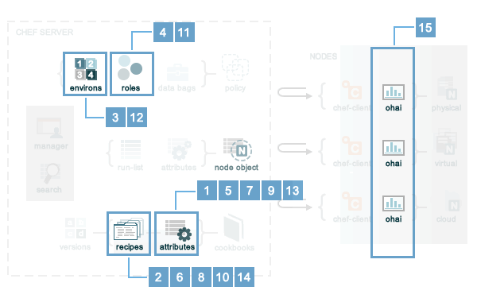

About Environments
An environment is a way to map an organization’s real-life workflow to what can be configured and managed when using Chef server. Every organization begins with a single environment called the _default environment, which cannot be modified (or deleted). Additional environments can be created to reflect each organization’s patterns and workflow. For example, creating production, staging, testing, and development environments. Generally, an environment is also associated with one (or more) cookbook versions.
The _default Environment
Every organization must have at least one environment. Every organization starts out with a single environment that is named _default, which ensures that at least one environment is always available to the Chef server. The _default environment cannot be modified in any way. Nodes, roles, run-lists, cookbooks (and cookbook versions), and attributes specific to an organization can only be associated with a custom environment.
Environment Attributes
An attribute can be defined in an environment and then used to override the default settings on a node. When an environment is applied during a chef-client run, these attributes are compared to the attributes that are already present on the node. When the environment attributes take precedence over the default attributes, the chef-client will apply those new settings and values during the chef-client run on the node.
An environment attribute can only be set to be a default attribute or an override attribute. An environment attribute cannot be set to be a normal attribute. Use the default_attribute and override_attribute methods in the Ruby DSL file or the default_attributes and override_attributes hashes in a JSON data file.
Note
Attributes can be configured in cookbooks (attribute files and recipes), roles, and environments. In addition, Ohai collects attribute data about each node at the start of the chef-client run. See https://docs.chef.io/attributes.html for more information about how all of these attributes fit together.
Attribute Types
There are two types of attributes that can be used with environments:
| Attribute Type | Description |
|---|---|
| default | A default attribute is automatically reset at the start of every chef-client run and has the lowest attribute precedence. Use default attributes as often as possible in cookbooks. |
| override | An override attribute is automatically reset at the start of every chef-client run and has a higher attribute precedence than default, force_default, and normal attributes. An override attribute is most often specified in a recipe, but can be specified in an attribute file, for a role, and/or for an environment. A cookbook should be authored so that it uses override attributes only when required. |
Attribute Persistence
At the beginning of a chef-client run, all attributes are reset. The chef-client rebuilds them using automatic attributes collected by Ohai at the beginning of the chef-client run and then using default and override attributes that are specified in cookbooks or by roles and environments. Normal attributes are never reset. All attributes are then merged and applied to the node according to attribute precedence. At the conclusion of the chef-client run, the attributes that were applied to the node are saved to the Chef server as part of the node object.
Attribute Precedence
Attributes are always applied by the chef-client in the following order:
- A default attribute located in a cookbook attribute file
- A default attribute located in a recipe
- A default attribute located in an environment
- A default attribute located in a role
- A force_default attribute located in a cookbook attribute file
- A force_default attribute located in a recipe
- A normal attribute located in a cookbook attribute file
- A normal attribute located in a recipe
- An override attribute located in a cookbook attribute file
- An override attribute located in a recipe
- An override attribute located in a role
- An override attribute located in an environment
- A force_override attribute located in a cookbook attribute file
- A force_override attribute located in a recipe
- An automatic attribute identified by Ohai at the start of the chef-client run
where the last attribute in the list is the one that is applied to the node.
Note
The attribute precedence order for roles and environments is reversed for default and override attributes. The precedence order for default attributes is environment, then role. The precedence order for override attributes is role, then environment. Applying environment override attributes after role override attributes allows the same role to be used across multiple environments, yet ensuring that values can be set that are specific to each environment (when required). For example, the role for an application server may exist in all environments, yet one environment may use a database server that is different from other environments.
Attribute precedence, viewed from the same perspective as the overview diagram, where the numbers in the diagram match the order of attribute precedence:
Attribute precedence, when viewed as a table:

Whitelist Attributes
Warning
When these settings are used, any attribute not defined in a whitelist will not be saved. Each attribute type is whitelisted independently of the other attribute types. For example, if automatic_attribute_whitelist defines attributes to be saved, but normal_attribute_whitelist, default_attribute_whitelist, and override_attribute_whitelist are not defined, then all normal, default and override attributes are saved, along with only the specified automatic attributes.
Attributes that should be saved by a node may be whitelisted in the client.rb file. The whitelist is a Hash of keys that specify each attribute to be saved.
Attributes are whitelisted by attribute type, with each attribute type being whitelisted independently. Each attribute type—automatic, default, normal, and override—may define whitelists by using the following settings in the client.rb file:
| Setting | Description |
|---|---|
| automatic_attribute_whitelist | A Hash that whitelists automatic attributes, preventing non-whitelisted attributes from being saved. For example: ['network/interfaces/eth0']. Default value: all attributes are saved. If the Hash is empty, no attributes are saved. |
| default_attribute_whitelist | A Hash that whitelists default attributes, preventing non-whitelisted attributes from being saved. For example: ['filesystem/dev/disk0s2/size']. Default value: all attributes are saved. If the Hash is empty, no attributes are saved. |
| normal_attribute_whitelist | A Hash that whitelists normal attributes, preventing non-whitelisted attributes from being saved. For example: ['filesystem/dev/disk0s2/size']. Default value: all attributes are saved. If the Hash is empty, no attributes are saved. |
| override_attribute_whitelist | A Hash that whitelists override attributes, preventing non-whitelisted attributes from being saved. For example: ['map - autohome/size']. Default value: all attributes are saved. If the Hash is empty, no attributes are saved. |
Warning
It is recommended that only automatic_attribute_whitelist be used to whitelist attributes. This is primarily because automatic attributes generate the most data, but also that normal, default, and override attributes are typically much more important attributes and are more likely to cause issues if they are whitelisted incorrectly.
For example, normal attribute data similar to:
{
"filesystem" => {
"/dev/disk0s2" => {
"size" => "10mb"
},
"map - autohome" => {
"size" => "10mb"
}
},
"network" => {
"interfaces" => {
"eth0" => {...},
"eth1" => {...},
}
}
}
To whitelist the network attributes and prevent the other attributes from being saved, update the client.rb file:
normal_attribute_whitelist ['network/interfaces/']
When a whitelist is defined, any attribute of that type that is not specified in that attribute whitelist will not be saved. So based on the previous whitelist for normal attributes, the filesystem and map - autohome attributes will not be saved, but the network attributes will.
Leave the value empty to prevent all attributes of that attribute type from being saved:
normal_attribute_whitelist []
For attributes that contain slashes (/) within the attribute value, such as the filesystem attribute '/dev/diskos2', use an array. For example:
automatic_attribute_whitelist [['filesystem','/dev/diskos2']]
Environment Formats
Environment data may be stored in two formats:
- As Ruby (i.e. a file that ends with .rb); this format is not available when running the chef-client in local mode
- As JSON (i.e. a file that ends with .json)
Ruby DSL
Ruby is a simple programming language:
- Chef uses Ruby as its reference language to define the patterns that are found in resources, recipes, and cookbooks
- Use these patterns to configure, deploy, and manage nodes across the network
Ruby is also a powerful and complete programming language:
- Use the Ruby programming language to make decisions about what should happen to specific resources and recipes
- Extend Chef in any manner that your organization requires
Each environment is defined as a Ruby file (i.e. a file that ends with .rb). Each environment file should contain the following domain-specific attributes:
| Setting | Description |
|---|---|
| cookbook | A version constraint for a single cookbook. For example: cookbook 'couchdb', '< 11.0.0'
or: cookbook 'my_rails_app', '< 1.2.0'
or: cookbook 'gems', '< 1.4.0'
|
| cookbook_versions | A version constraint for a group of cookbooks. For example: cookbook_versions({
'couchdb'=>'= 11.0.0',
'my_rails_app'=>'~> 1.2.0'
})
|
| default_attributes | Optional. A set of attributes to be applied to all nodes, assuming the node does not already have a value for the attribute. This is useful for setting global defaults that can then be overridden for specific nodes. If more than one role attempts to set a default value for the same attribute, the last role applied is the role to set the attribute value. When nested attributes are present, they are preserved. For example, to specify that a node that has the attribute apache2 should listen on ports 80 and 443 (unless ports are already specified): default_attributes 'apache2' => { 'listen_ports' => [ '80', '443' ] }
|
| description | A description of the functionality that is covered. For example: description 'The development environment'
|
| name | A unique name within the organization. Each name must be made up of letters (upper- and lower-case), numbers, underscores, and hyphens: [A-Z][a-z][0-9] and [_-]. Spaces are not allowed. For example: name 'dev01-24'
|
| override_attributes | Optional. A set of attributes to be applied to all nodes, even if the node already has a value for an attribute. This is useful for ensuring that certain attributes always have specific values. If more than one role attempts to set an override value for the same attribute, the last role applied wins. When nested attributes are present, they are preserved. For example: override_attributes 'apache2' => { 'max_children' => '50' }
The parameters in a Ruby file are actually Ruby method calls, so parentheses can be used to provide clarity when specifying numerous or deeply-nested attributes. For example: override_attributes(
:apache2 => {
:prefork => { :min_spareservers => '5' }
}
)
or: override_attributes(
:apache2 => {
:prefork => { :min_spareservers => '5' }
},
:tomcat => {
:worker_threads => '100'
}
)
|
A Ruby file for each non-default environment must exist in the environments/ subdirectory of the chef-repo. (If the chef-repo does not have this subdirectory, then it should be created.) The complete environment has the following syntax:
name 'environment_name'
description 'environment_description'
cookbook OR cookbook_versions 'cookbook' OR 'cookbook' => 'cookbook_version'
default_attributes 'node' => { 'attribute' => [ 'value', 'value', 'etc.' ] }
override_attributes 'node' => { 'attribute' => [ 'value', 'value', 'etc.' ] }
where both default and override attributes are optional and either a cookbook or cookbook versions (one or more) are specified. For example, an environment named dev that uses the couchdb cookbook (version 11.0.0 or higher) that listens on ports 80 and 443:
name 'dev'
description 'The development environment'
cookbook_versions 'couchdb' => '= 11.0.0'
default_attributes 'apache2' => { 'listen_ports' => [ '80', '443' ] }
Or (using the same scenario) to specify a version constraint for only one cookbook:
cookbook 'couchdb', '= 11.0.0'
More than one cookbook version can be specified:
cookbook_versions({
'couchdb'=>'= 11.0.0',
'my_rails_app'=>'~> 1.2.0'
})
Attributes are optional and can be set at the default and override levels. These will be processed according to attribute precedence. An environment attribute will be applied to all nodes within the environment, except in places where it is overridden by an attribute with higher precedence. For example:
default_attributes 'apache2' => { 'listen_ports' => [ '80', '443' ] }
will have all nodes in the environment (node[:apache2][:listen_ports]) set to '80' and '443' unless they were overridden by an attribute with higher precedence. For example:
override_attributes 'apache2' => { 'listen_ports' => [ '99', '999' ] }
JSON
The JSON format for environments maps directly to the domain-specific Ruby format: the same settings, attributes, and values, and a similar structure and organization, just formatted as JSON. When an environment is defined as JSON the file that contains that data must be defined as a file that ends with .json. For example:
{
"name": "dev",
"default_attributes": {
"apache2": {
"listen_ports": [
"80",
"443"
]
}
},
"json_class": "Chef::Environment",
"description": "",
"cookbook_versions": {
"couchdb": "= 11.0.0"
},
"chef_type": "environment"
}
The JSON format has two additional settings:
| Setting | Description |
|---|---|
| chef_type | Always set this to environment. Use this setting for any custom process that consumes environment objects outside of Ruby. |
| json_class | Always set this to Chef::Environment. The chef-client uses this setting to auto-inflate an environment object. If objects are being rebuilt outside of Ruby, ignore it. |
Create Environments
An environment can be created in five different ways:
- Creating a Ruby file in the environments sub-directory of the chef-repo and then pushing it to the Chef server
- Creating a JSON file directly in the chef-repo and then pushing it to the Chef server
- Using knife
- Using the Chef management console web user interface
- Using the Chef server REST API
Once an environment exists on the Chef server, a node can be associated with that environment using the chef_environment method.
Manage Environments
Once created, an environment can be managed in several ways:
- By using knife and passing the -E ENVIRONMENT_NAME option with knife cookbook upload
- By using the Chef management console web user interface
- By using Ruby or JSON files that are stored in a version source control system. These files are pushed to the Chef server using the knife environment subcommand and the from file argument. This approach allows environment data to be dynamically generated. This approach will not work unless these files are defined in the proper format—Ruby file end with .rb; JSON files end with .json.
These workflows are mutually exclusive: only the most recent environment changes will be kept on the Chef server, regardless of the source of those changes. All previous changes are overwritten when environment data is updated.
The settings for environments can be modified and environments can be integrated into the larger infrastructure by associating them with nodes and by using recipes to call specific environment settings.
Find Environment from Recipe
Use the following syntax to find the current environment from a recipe:
node.environment()
or:
node.chef_environment
Save in a Data Bag
Values that are stored in a data bag are global to the organization and are available to any environment. There are two main strategies that can be used to store per-environment data within a data bag: by using a top-level key that corresponds to the environment or by using separate items for each environment.
A data bag that is storing a top-level key for an environment might look something like this:
{
"id": "some_data_bag_item",
"production" : {
// Hash with all your data here
},
"testing" : {
// Hash with all your data here
}
}
When using the data bag in a recipe, that data can be accessed from a recipe using code similar to:
bag_item[node.chef_environment]['some_other_key']
The other approach is to use separate items for each environment. Depending on the amount of data, it may all fit nicely within a single item. If this is the case, then creating different items for each environment may be a simple approach to providing per-environment values within a data bag. However, this approach is more time-consuming and may not scale to very large environments or when the data must be stored in many data bag items.
Override Attributes in Roles
Environment attributes that are used with roles can be overridden. Typically, this is done by using attribute precedence, but sometimes it may be necessary to ensure that specific attributes are used based on the presence of specific environments. This type of scenario is best addressed in using a recipe that relies on a top-level key that is stored in a data bag.
For example, to retrieve a value from a data bag based on a specific environment:
mything = data_bag_item('things', 'mything')
attribute_i_want = mything[node.chef_environment]
Set for a Node
A node is considered to be associated with an environment when the chef_environment attribute is set. The chef_environment attribute cannot be set with normal or override attributes (i.e. in a role) because it is actually a method. An environment may be set explicitly using the following methods:
By using the knife edit and knife exec subcommands
By editing the chef_environment directly using knife or the Chef management console
By editing the environment configuration details in the client.rb file, and then using knife bootstrap -e environment_name to bootstrap the changes to the specified environment
Note
After the environment has been set via bootstrap, the environment is set in the client.rb file and may not be modified using the Chef management console or the edit argument of the knife node subcommand.
By setting the environment configuration entry in the client.rb file ; when the chef-client runs, it will pick up the value and then set the chef_environment attribute of the node
Set using chef-solo
An environment is defined using JSON or the Ruby DSL. chef-solo will look for environments in /var/chef/environments, but this location can be modified by changing the setting for environment_path in solo.rb. For example, the following setting in solo.rb:
environment_path '/var/chef-solo/environments'
Environment data looks like the following in JSON:
{
"name": "dev",
"default_attributes": {
"apache2": {
"listen_ports": [
"80",
"443"
]
}
},
"json_class": "Chef::Environment",
"description": "",
"cookbook_versions": {
"couchdb": "= 11.0.0"
},
"chef_type": "environment"
}
and like the following in the Ruby DSL:
name 'environment_name'
description 'environment_description'
cookbook OR cookbook_versions 'cookbook' OR 'cookbook' => 'cookbook_version'
default_attributes 'node' => { 'attribute' => [ 'value', 'value', 'etc.' ] }
override_attributes 'node' => { 'attribute' => [ 'value', 'value', 'etc.' ] }
Move Nodes
Nodes can be moved between environments, such as from a “dev” to a “production” environment by using the knife exec subcommand. For example:
$ knife exec -E 'nodes.transform("chef_environment:dev") { |n| n.chef_environment("production") }'
Search Environments
When searching, an environment is an attribute. This allows search results to be limited to a specified environment by using Boolean operators and extra search terms. For example, to use knife to search for all of the servers running CentOS in an environment named “QA”, enter the following:
knife search node "chef_environment:QA AND platform:centos"
Or, to include the same search in a recipe, use a code block similar to:
qa_nodes = search(:node,"chef_environment:QA")
qa_nodes.each do |qa_node|
# Do useful work specific to qa nodes only
end